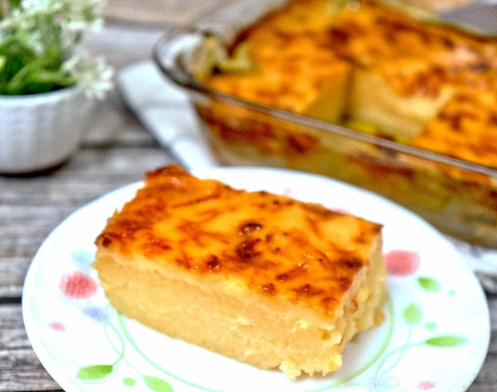

Lumpiang Shanghai
Ingredients:
Procedure:
- In a large bowl, mix ground pork, grated carrot, chopped onion, minced garlic, egg, salt, and black pepper. Use your hands to combine everything well.
- Lay a spring roll wrapper on a flat surface. Place a spoonful of the pork mixture near the bottom, then roll it tightly, folding in the sides. Seal the edge with a dab of water.
- Heat oil in a deep pan. To check if it's hot enough, drop a small piece of wrapper—if it bubbles, it's ready.
- Fry lumpia in batches, turning occasionally until golden brown and crispy.
- Remove from oil and drain on paper towels. Serve hot with sweet chilli sauce.
|
Pancit Bihon
Ingredients:
Procedure:
- Soak bihon noodles in water until soft. Drain and set aside.
- Heat oil in a kawali. Sauté garlic and onion until fragrant.
- Add shredded chicken and stir-fry for a few minutes.
- Pour in soy sauce and chicken broth. Bring to a gentle simmer.
- Add carrots and cabbage, stirring well.
- Place the softened bihon noodles into the kawali, gently mixing everything together. Stir continuously until the noodles absorb the broth and soften.
- Season with salt and pepper. Taste and adjust if needed.
- Serve warm with calamansi on the side.
|
Cassava Cake

Ingredients:
Procedure:
- In a large bowl, combine grated cassava, coconut milk, condensed milk, beaten eggs, and melted butter. Stir until well mixed.
- Grease a llanera or baking pan with butter or line it with banana leaves.
- Pour the cassava mixture into the pan and spread evenly.
- Steam the cassava cake over medium heat for about 1 hour or until a toothpick inserted in the center comes out clean.
- Once cooked, sprinkle grated cheese on top and let it melt from the residual heat. If preferred, use a torch to lightly toast the cheese.
- Allow to cool slightly before slicing and serving.
|